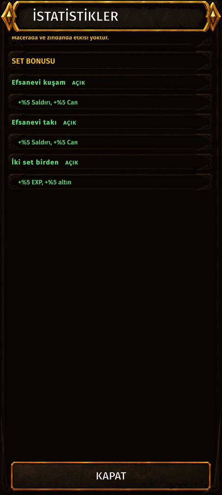
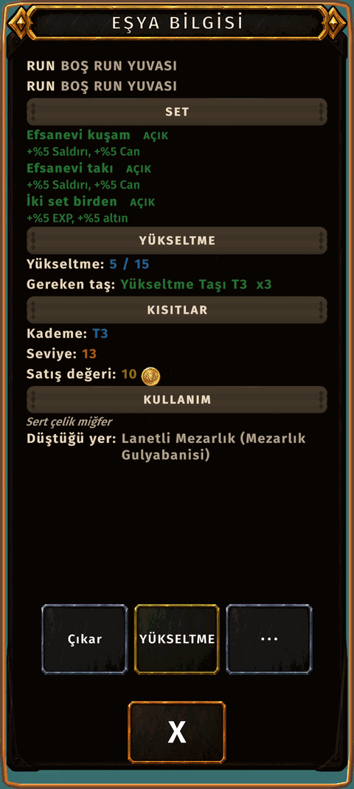

Set bonus
What it is
When every piece you wear is Legendary, you get a set bonus. There are two sets, gear and jewelry, and wearing both complete sets adds a third bonus.
How to get there
- INVENTORY.
- Tap one of your stat boxes (power, health, attack): the STATS page opens, SET BONUS is at the bottom.
- Or tap any equipped gear or jewelry: the SET section in its info.


Screen shown in Turkish.
What it does
- Legendary gear: more attack and more health.
- Legendary jewelry: more attack and more health again, on top of the gear set.
- Both sets: more EXP and more gold from your fights.
Which items count
- Gear set: helmet, chest, pants, gloves, boots, main hand and off hand.
- Jewelry set: both earrings, the necklace, both rings and the belt.
- Only rarity matters: every piece in the set must be Legendary. Any item from the right slot counts, there is no set item list.
How to see it
- The STATS page lists all three bonuses under SET BONUS. A complete set shows ACTIVE in green; an incomplete one is dimmed and shows how many pieces you have.
- Every gear and jewelry item shows the same lines in its SET section, Legendary or not, so you always see what is missing.
Watch out
- There is no partial bonus: a set gives nothing until every slot is filled with a Legendary item.
- Broken items do not count. Repair them and the set comes back.
- An empty slot breaks the set: wear something in every slot, including the off hand.